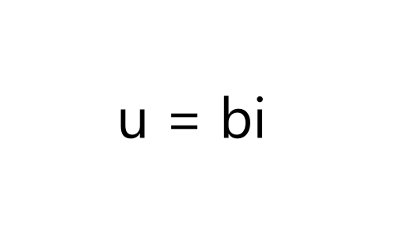
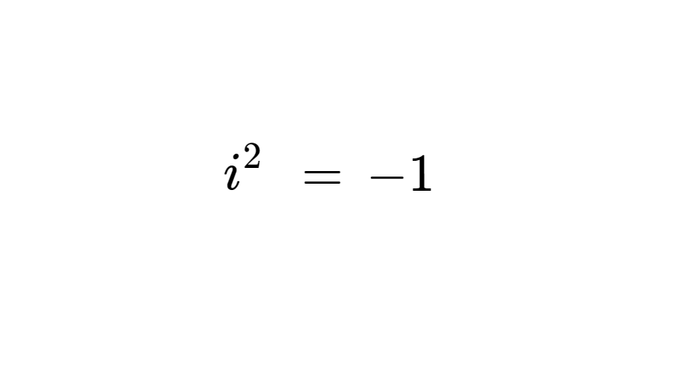

Liczby Urojone
Liczby urojone (u) specjalne przypadki liczb zespolonych, w których część rzeczywista wynosi 0.
Składają się one z liczby rzeczywistej (b) określającej ilość jednostek urojonych i.
Do liczb urojonych należą: 3i, 5i, -2i.

Jednostka
urojona i
Jednostka urojona (i), to liczba która nie należy do zbioru liczb rzeczywistych. Z definicji spełnia równanie: i² = -1, z którego wynika, że i = √-1. Jendostka ta zmieniła matematykę umożliwiając operowanie na pierwiastkach liczb ujemnych i tworzenie liczb zespolonych.
